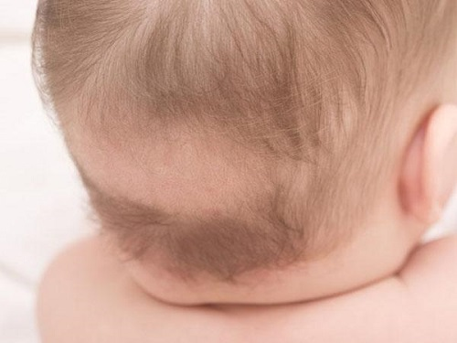

Потеря волос, или алопеция, у детей имеет несколько различных причин. К счастью, она почти всегда излечима. Вот шесть главных причин выпадения волос у детей.
ГРИБКОВАЯ ИНФЕКЦИЯ КОЖИ ВОЛОСИСТОЙ ЧАСТИ ГОЛОВЫ
Стригущий лишай передается от инфицированного ребенка, обычно при совместном использовании головного убора, щеток, расчесок, полотенец или подушек. Грибок проникает в ствол волоса, приводя к его ослаблению. Это часто приводит к образованию круглой проплешины в месте, где живет грибок.
СИМПТОМЫ
Симптомы стригущего лишая могут сильно различаться, но, как правило, включают:
• Кожа в месте проплешины покрыта чешуйками или шелушится.
• Черные точки. Маленькие черные точки на самом деле являются остатками ствола волоса, который отломался у поверхности кожи.
• Зуд на пораженном участке.
• На поврежденном участке кожи может образовываться красный круглый нарост, называемый керион.
ДИАГНОЗ
Ваш врач может заподозрить грибковую инфекцию кожи по внешним признакам. Он может взять образец пораженной кожи и волосинок и изучить их под микроскопом на наличие грибка. Врач также может вырастить грибок, взяв образец с пораженного участка и наблюдая за этим.
СОВЕТ ДОКТОРОВ СИРС: ЛЕЧЕНИЕ ШАМПУНЕМ Вы можете сделать ребенка менее опасным для окружающих, если два раза в неделю моете его волосы шампунем, содержащим сульфид селена, в течение всего курса оральной терапии. |
ЛЕЧЕНИЕ
Для успешного лечения грибковых инфекций кожи волосистой части головы обычно требуется прием оральных противогрибковых препаратов на протяжении минимум 6 недель. Противогрибковые кремы и мази в этом случае неэффективны. Практически всегда после успешного лечения волосы постепенно начинают расти.
ОПАСЕН ЛИ СТРИГУЩИЙ ЛИШАЙ?
Да. Ваш ребенок может заразить им других детей. Важно рассказать ему о том, что нельзя пользоваться чужими расческами, головными уборами и т.д., пока он полностью не вылечится.
ВЫДЕРГИВАНИЕ ВОЛОС
Потеря волос может произойти, если ребенок сам выдергивает их, что также называют трихотилломанией (навязчивое выдергивание волос). Это обычно приводит к образованию неровных проплешин, которые могут появиться в любом месте скальпа. Такие участки не имеют правильной овальной или круглой формы, как в других случаях облысения.
СОВЕТ ДОКТОРОВ СИРС: СТАНЬТЕ ДЕТЕКТИВОМ, ИЩУЩИМ ВОЛОСЫ Если вы подозреваете, что ребенок вырывает у себя волосы, наблюдайте за ним в течение дня. Чаще всего дети дергают или тянут волосы перед тем, как уснуть, или во время просмотра телевизора и фильмов. |
Зачастую трихотилломания развивается медленно, если у ребенка есть привычка дергать или тянуть волосы, и может усугубиться, если ребенок часто повышенно тревожен или переживает стресс.
Единственное эффективное лечение этой проблемы — избавиться от привычки дергать или крутить волосы. Может помочь и избавление от тревоги и стресса. Со временем залысины почти всегда отрастают.
ФИЗИЧЕСКОЕ ПОВРЕЖДЕНИЕ ВОЛОС
Детская тракционная алопеция развивается вследствие физического повреждения стержней волос. Волосы маленького ребенка намного более хрупкие и непрочные, чем у взрослого. Эта проблема часто встречается у девочек, чьи волосы слишком туго заплетают или часто подвергают воздействию химикатов. Многие популярные в настоящее время прически, слишком травмируют хрупкие стержни детских волос.
Прежде всего ваш врач должен убедиться, что потеря волос вызвана детской тракционной алопецией, а не чем-то другим. Эта проблема лечится просто более бережным обращением с волосами и ношением более естественных причесок. Следование этим рекомендациям практически всегда приводит к отрастанию волос, хотя этот процесс может занять несколько месяцев.
ОЧАГОВАЯ АЛОПЕЦИЯ
При круговой алопеции на коже волосистой части головы появляются одна или более круглых проплешин. В отличие от стригущего лишая кожа на лысом участке выглядит абсолютно нормальной и не более чувствительна, чем на любом другом участке головы. Причина этого явления неизвестна. Возможно, это наследственное заболевание. Очаговая алопеция не имеет инфекционной природы и не связана с неправильным питанием или стрессами.
Посетите врача, чтобы убедиться, что это именно очаговая алопеция. Единственное «медицинское лечение» в этом случае — наблюдать и ждать. Практически у всех детей волосы отрастают заново в течение года. Обратитесь к врачу, если эта проблема не проходит или если через год наблюдаются ухудшения.
ТЕЛОГЕНОВАЯ АЛОПЕЦИЯ (НОРМАЛЬНОЕ ВЫПАДЕНИЕ ВОЛОС У НОВОРОЖДЕННЫХ)
Это странно звучащее обозначение «нормального» выпадения волос у младенцев. В первые несколько месяцев жизни может показаться, что у некоторых детей волос выпадает больше, чем появляется. Иногда у новорожденного на голове может быть больше волос, чем три месяца спустя! Это абсолютно нормальный процесс, который происходит из-за того, что более зрелые волосы заменяют хрупкие и крошечные волоски. Иногда это происходит в более старшем возрасте — при восстановлении после болезни, так как волосяные фолликулы могли находиться в состоянии покоя, пока организм боролся с заболеванием.
РУБЦОВАЯ АЛОПЕЦИЯ
Лысый участок появляется вследствие какой-то травмы, например, пореза или ожога кожи волосистой части головы. Травма может убить фолликулы на поврежденном участке, что приводит к образованию проплешины. Когда травмированная область маленькая, она обычно незаметна, если только волосы не очень коротко пострижены. Как правило, эта лысина остается на всю жизнь.
Здоровье ребенка от докторов Сирс / Сирс У. и др.